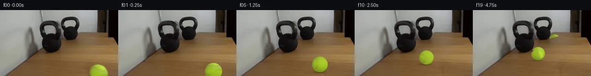

![首帧]()

Round 00
2026-11-05T16:52:14.866575+00:00像素候选变化代码 +273/−0inspection 更新
pixels 4d79cd41d3ae3694 · code 9605dab7a7389d1e
查看本轮 generate.py 真实 diff
--- previous/generate.py
+++ current/generate.py
@@ -0,0 +1,273 @@
+"""PixelWorld continuation using source pixels and analytic sphere/ground geometry.
+
+No image viewer, learned model, external engine, or external asset is used.
+Run with `python generate.py` from this workspace.
+"""
+from pathlib import Path
+import json
+import numpy as np
+from PIL import Image, ImageDraw
+from scipy.ndimage import gaussian_filter, map_coordinates, binary_dilation
+from artifact_io import save
+
+ROOT = Path(__file__).resolve().parent
+SOURCE = np.asarray(Image.open(ROOT / 'first_frame.png').convert('RGB'))
+RGB = SOURCE.astype(np.float64)
+HEIGHT, WIDTH = 144, 256
+Y, X = np.mgrid[:HEIGHT, :WIDTH]
+CX0, CY0, R0 = 213.19, 137.68, 19.21
+FOCAL, HORIZON, PRINCIPAL_X = 230., -48., 128.
+Q = R0 / (CY0 - HORIZON)
+CAMERA_HEIGHT = 1. + 1. / Q # Sphere radius is the world distance unit.
+Z0 = FOCAL / R0
+Z1 = FOCAL / (Q * (93.4 - HORIZON))
+X0 = (CX0 - PRINCIPAL_X) * Z0 / FOCAL
+X1 = (139. - PRINCIPAL_X) * Z1 / FOCAL
+PATH = np.array([X1-X0, 0., Z1-Z0])
+TRAVEL = np.linalg.norm(PATH)
+ROLL_AXIS = np.array([-PATH[2], 0., PATH[0]]) / TRAVEL
+
+
+def smoothstep(a, b, value):
+ u = np.clip((value-a)/(b-a), 0., 1.)
+ return u*u*(3.-2.*u)
+
+
+def rotation(angle):
+ a = ROLL_AXIS
+ cross = np.array([[0., -a[2], a[1]], [a[2], 0., -a[0]],
+ [-a[1], a[0], 0.]])
+ return np.cos(angle)*np.eye(3) + (1.-np.cos(angle))*np.outer(a,a) + np.sin(angle)*cross
+
+
+# Calibrate an upright mirror from the two kettlebell ground projections.
+def floor_point(u, v):
+ z = FOCAL*CAMERA_HEIGHT / (v-HORIZON)
+ return np.array([(u-PRINCIPAL_X)*z/FOCAL, z])
+
+
+real_foot, virtual_foot = floor_point(109.,94.), floor_point(150.,65.)
+mirror_normal = virtual_foot-real_foot
+mirror_normal /= np.linalg.norm(mirror_normal)
+mirror_offset = np.dot(mirror_normal, (real_foot+virtual_foot)/2.)
+MIRROR_XZ = np.eye(2)-2.*np.outer(mirror_normal,mirror_normal)
+MIRROR_TRANSLATION = 2.*mirror_offset*mirror_normal
+MIRROR_NORMALS = np.eye(3)
+MIRROR_NORMALS[np.ix_([0,2],[0,2])] = MIRROR_XZ
+
+
+def clean_table():
+ """Fill only the original sphere footprint from nearby table samples."""
+ replacement = RGB.copy()
+ # Row-wise illumination interpolation preserves broad wood grain bands.
+ donor = RGB[:, np.clip(np.arange(WIDTH)-47, 0, WIDTH-1)]
+ grain = donor-gaussian_filter(donor, sigma=(.7,5.,0))
+ for y in range(113, HEIGHT):
+ left = np.median(RGB[y,181:193], axis=0)
+ right = np.median(RGB[y,240:252], axis=0)
+ a = np.clip((np.arange(WIDTH)-187.)/(246.-187.),0.,1.)
+ replacement[y] = left[None,:]*(1.-a[:,None])+right[None,:]*a[:,None]+.72*grain[y]
+ radius = np.sqrt(((X-CX0)/20.15)**2+((Y-CY0)/20.0)**2)
+ erase = 1.-smoothstep(.97,1.065,radius)
+ erase *= smoothstep(114.,117.,Y)
+ # Include color fringe beyond the fitted sphere boundary.
+ green = (RGB[:,:,1]>1.08*RGB[:,:,0]) & (RGB[:,:,1]>1.6*RGB[:,:,2]) & (Y>114) & (X>188)
+ fringe = gaussian_filter(binary_dilation(green, iterations=1).astype(float), .6)
+ erase = np.maximum(erase,fringe)
+ return RGB*(1.-erase[:,:,None])+replacement*erase[:,:,None], erase
+
+
+BACKGROUND, ERASE = clean_table()
+LIGHT = np.array([.52,-.38,-.76]); LIGHT /= np.linalg.norm(LIGHT)
+
+
+def illumination(n):
+ diffuse = np.maximum(n@LIGHT, 0.)
+ shade = .75+.28*diffuse
+ top = np.maximum(-n[...,1],0.)
… diff truncated; 186 more lines …